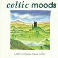

Celtic Lyrics Corner > Compilations > Celtic Moods > Heroine
|  | Heroine |
| Credits : | The Edge, Michael Brook & Sinéad O'Connor |
| Appears On : | Celtic Moods (compilation) |
| Language : | English |
Lyrics :
Afraid, but he will not run
Alone, thy will be done
Confessed, but you still feel the shame
Bring me into your arms again
Heroine, heroine, heroine, heroine
Touch these eyes with a broken smile
Touch my mouth with your furrowed brow
Lift my heart, feel my shame
Lead me into rest again
Heroine, heroine, heroine, heroine
The night is long, but the day will come
With promises for the chosen one
Sowed the seed, sweet taste the rain
Call tonight into my arms again
Heroine, heroine, heroine, heroine
The night is long, but the day will come
With promises for the chosen one
Sowed the seed, sweet taste the rain
Fall dead of night into the light of day